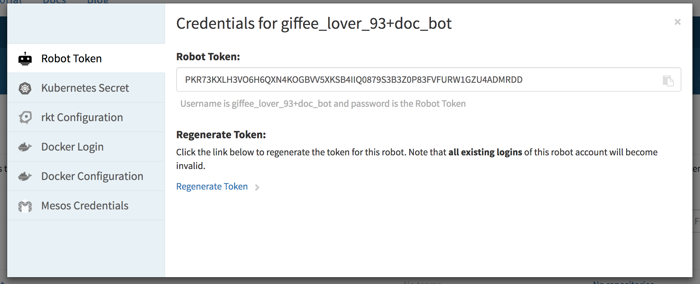

Using authentication for a registry¶
Many container image registries require authentication. This document explains how to configure container management software like Docker, Kubernetes, rkt, and Mesos to authenticate with and pull containers from registries like Quay and Docker Hub.
Using a Quay robot for registry auth¶
The recommended way to authenticate container manager software with quay.io is via a Quay Robot. The robot account acts as an authentication token with some nice features, including:
- Readymade repository authentication configuration files
- Credentials are limited to specific repositories
- Choose from read, write, or admin privileges
- Token regeneration

Quay robots provide config files for Kubernetes, Docker, Mesos, and rkt, along with instructions for using each. Find this information in the Robot Accounts tab under your Quay user settings. For more information, see the Quay robot documentation.
Manual registry auth setup¶
If you are using a registry other than Quay (e.g., Docker Hub, Docker Store, etc) you will need to manually configure your credentials with your container-runtime or orchestration tool.
Docker¶
The Docker client uses an interactive command to authenticate with a centralized service.
$ docker login -u <username> -p <password> https://registry.example.ioThis command creates the file $HOME/.docker/config.json, formatted like the following example:
/home/core/.docker/config.json:
{
"auths": {
"https://index.docker.io/v1/": {
"auth": "xxxxxxxxxxxxxxxxxxxxxxxxxxxxxxxxxxxxxxxxxxx="
},
"quay.io": {
"xxxx": "xxxxxxxxxxxxxxxxxxxxxxxxxxxxxxxxxxxxxxxxxxxxxxxxxxxxxxxxxxxxxxxxxxxxxxxxxxxxxxxxxxxxxxxxxxxxxxxxxxxxxxxxxxxxxxxxxxxxxxxxxxxxxxxxxxxxxxxxxxxxxxxxxxxxxxxxxxxxxxxx"
},
"https://registry.example.io/v0/": {
"auth": "xxxxxxxxxxxxxxxxxxxxxxxxxxxxxxxxxxxxxxxxxxx="
}
}
}On Flatcar Container Linux, this process can be automated by writing out the config file during system provisioning with a Container Linux Config. Since the config is written to the core user's home directory, ensure that your systemd units run as that user, by adding, e.g., User=core.
Docker also offers the ability to configure a credentials store, such as your operating system's keychain. This is outlined in the Docker login documentation.
Kubernetes¶
Kubernetes uses Secrets to store registry credentials.
When manually configuring authentication with any registry in Kubernetes (including Quay and Docker Hub) the following command is used to generate the Kubernetes registry-auth secret:
$ kubectl create secret docker-registry my-favorite-registry-secret --docker-username=giffee_lover_93 --docker-password='passphrases are great!' --docker-email='giffee.lover.93@example.com' --docker-server=registry.example.io
secret "my-favorite-registry-secret" createdIf you prefer you can store this in a YAML file by adding the --dry-run and -o yaml flag to the end of your command and copying or redirecting the output to a file:
$ kubectl create secret docker-registry my-favorite-registry [...] --dry-run -o yaml | tee credentials.yamlapiVersion: v1
data:
.dockercfg: xxxxxxxxxxxxxxxxxxxxxxxxxxxxxxxxxxxxxxxxxxxxxxxxxxxxxxxxxxxxxxxxxxxxxxxxxxxxxxxxxxxxxxxxxxxxxxxxxxxxxxxxxxxxxxxxxxxxxxxxxxxxxxxxxxxxxxxxxxxxxxxxxxxxxxxxxxxxxxxxxxxxxxxxxxxxxxxxxxxxxxxxxxxxxxxxxxxxxxxxxxxxxxxxxxxxxxxxxxxxxxxxxxxxxxxxxxxxxxxxxx==
kind: Secret
metadata:
creationTimestamp: null
name: my-favorite-registry-secret
type: kubernetes.io/dockercfg$ kubectl create -f credentials.yaml
secret "my-favorite-registry-secret" createdYou can check that this secret is loaded with with the kubectl get command:
$ kubectl get my-favorite-registry-secret
NAME TYPE DATA AGE
my-favorite-registry-secret kubernetes.io/dockercfg 1 30mThe secret can be used in a Pod spec with the imagePullSecrets variable:
apiVersion: v1
kind: Pod
metadata:
name: somepod
namespace: all
spec:
containers:
- name: web
image: registry.example.io/v0/giffee_lover_93/somerepo
imagePullSecrets:
- name: my-favorite-registry-secretFor more information, check the docker-registry Kubernetes secret and Kubernetes imagePullSecrets documentation.
rkt¶
rkt stores registry-authentication in a JSON file stored in the directory /etc/rkt/auth.d/.
/etc/rkt/auth.d/registry.example.io.json
{
"rktKind": "auth",
"rktVersion": "v1",
"domains": [
"https://registry.example.io/v0/"
],
"type": "basic",
"credentials": {
"user": "giffeeLover93",
"password": "passphrases are great!"
}
}While you can embed your password in plaintext in this file, you should try using a disposable token instead. Check your registry documentation to see if it offers token-based authentication.
Now rkt will authenticate with https://registry.example.io/v0/ using the provided credentials to fetch images.
For more information about rkt credentials, see the rkt configuration docs.
Just like with the Docker config, this file can be copied to /etc/rkt/auth.d/registry.example.io.json on a Flatcar Container Linux node during system provisioning with a Container Linux Config.
Mesos¶
Mesos uses a gzip-compressed archive of a .docker/config.json (directory and file) to access private repositories.
Once you have followed the above steps to create the docker registry auth config file create your Mesos configuration using tar:
$ tar cxf ~/.docker/config.jsonThe archive secret is referenced via the uris field in a container specification file:
{
"id": "/some/name/or/id",
"cpus": 1,
"mem": 1024,
"instances": 1,
"container": {
"type": "DOCKER",
"docker": {
"image": "https://registry.example.io/v0/giffee_lover_93/some-image",
"network": "HOST"
}
},
"uris": [
"file:///path/to/registry.example.io.tar.gz"
]
}More thorough information about configuring Mesos registry authentication can be found on the 'Using a Private Docker Registry' documentation.
Copying the config file with a Container Linux Config¶
Container Linux Configs can be used to provision a Flatcar Container Linux node on first boot. Here we will use it to copy registry authentication config files to their appropriate destination on disk. This provides immediate access to your private Docker Hub and Quay image repositories without the need for manual intervention. The same Container Linux Config file can be used to copy registry auth configs onto an entire cluster of Flatcar Container Linux nodes.
Here is an example of using a Container Linux Config to write the .docker/config.json registry auth configuration file mentioned above to the appropriate path on the Flatcar Container Linux node:
storage:
files:
- path: /home/core/.docker/config.json
filesystem: root
mode: 0644
contents:
inline: |
{
"auths": {
"quay.io": {
"auth": "AbCdEfGhIj",
"email": "your.email@example.com"
}
}
}Container Linux Configs can also download a file from a remote location and verify its integrity with a SHA512 hash:
storage:
files:
- path: /home/core/.docker/config.json
filesystem: root
mode: 0644
contents:
remote:
url: http://internal.infra.example.com/cluster-docker-config.json
verification:
hash:
function: sha512
sum: 0123456789abcdef0123456789abcdef0123456789abcdef0123456789abcdef0123456789abcdef0123456789abcdef0123456789abcdef0123456789abcdefFor details, check out the Container Linux Config examples.